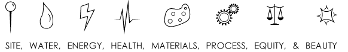
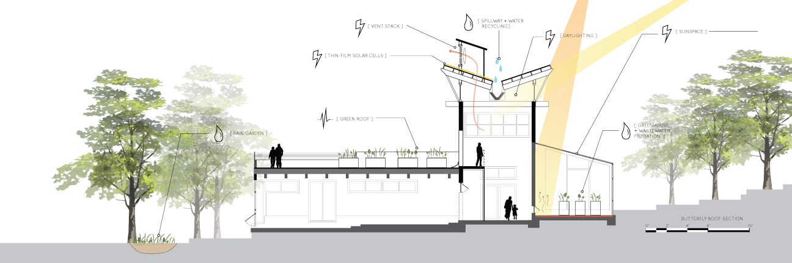
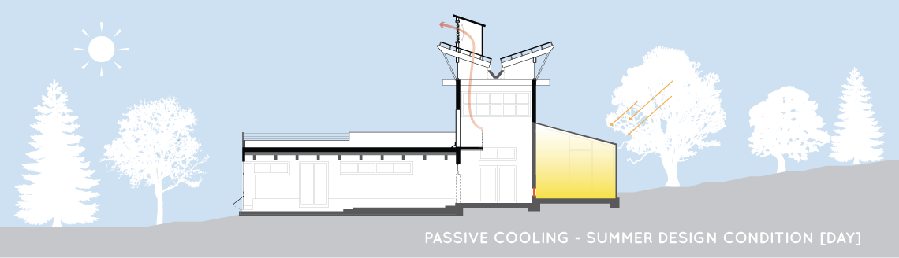
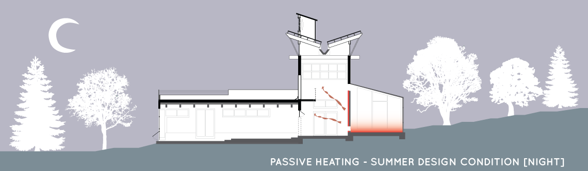
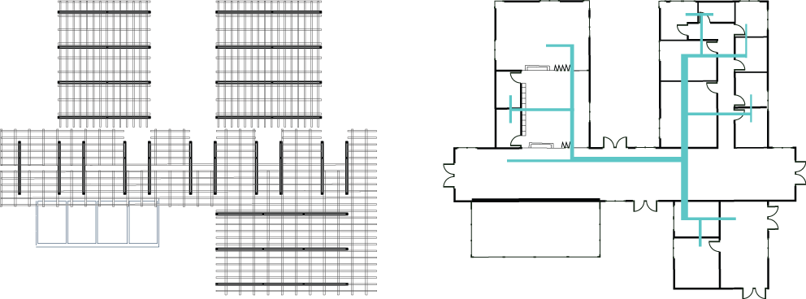

Center for Urban Ecology
Sustainable site design

The CUE Outreach Center is an elegant solution to the question of sustainable and efficient design. It is a physical manifestation of the values taught at the facility. A variety of engaging experiences are presented to its visitors: viewing the spillway water collection system nested between the exposed rafters of the butterfly roof; walking among the local flora on the second-level green roofs and greenhouse; testing out the operable windows of the passive ventilation system; playing on the exterior terrace spaces. . .among much more.
The design was created on the eight strategies of the Living Building Challenge:


The section diagram illustrates how each of the petals of the Living Building Challenge have been incorporated into the design of the building.


Above site plan for the CUE design, located on Butler University's campus. The existing trees on site are to remain and help to shelter the structure from prevailing winds in the winter while allowing for cool breezes in the summer months.
The CUE design uses passive ventilation to cool the building by use of the greenhouse on the south side of the building. During the day, the greenhouse is closed, and stack ventilation out of the cooling towers draws the warm air up through the facility.
During the evening, the vents to the greenhouse are opened, allowing the collected heat to move throughout the facility. The next day, the vents are closed, and the whole process is repeated.
Schematic drawings of the structural roof framing (above left) and HVAC layout (above right).